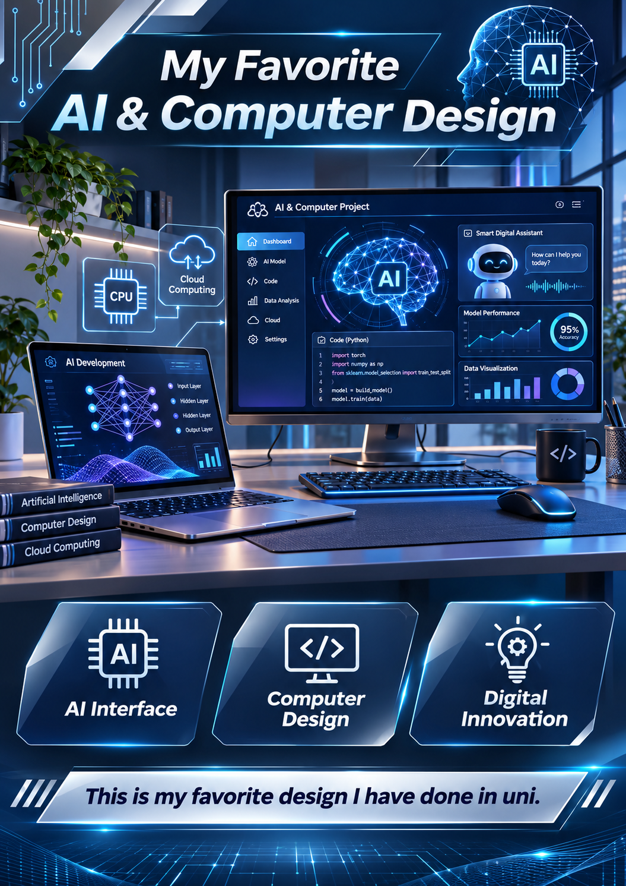

Self-introduction
My Introduction Video
An introduction to my studies, interests, and future goals. Read my introduction in the About Me section above.
Press play to watch my self-introduction video.
Read my introductionUniversity of Sharjah · IT Multimedia
I enjoy technology, computers, and creative work. Explore my introduction and my favorite graphic design project.
View my projects Back to teamHi everyone! My name is Mohammed, and I am a student at the University of Sharjah. My major is IT Multimedia because I enjoy technology, computers, and creative things.
In my free time, I love playing video games. My favorite game is GTA because it is fun and exciting, and I enjoy playing it with my friends. Gaming is one of my favorite hobbies because it helps me relax after a long day at university.
I also love football, and my favorite football club is FC Barcelona. I enjoy watching their matches and supporting them. Barcelona has always been my favorite team, and I get really excited whenever they win.
As a person, I enjoy spending time with my friends, having fun, and trying new things. I also like learning new skills, especially things related to technology and multimedia.
In the future, I hope to graduate from university, find a good job in my field, and make my family proud. I want to keep improving myself and become successful in life.
That's a little bit about me, my studies, and the things I love to do. Thank you for watching!
An introduction to my studies, interests, and future goals. Read my introduction in the About Me section above.
Press play to watch my self-introduction video.
Read my introductionComputers and Artificial Intelligence

This is my favorite design that I made in my Graphic Design class at the University of Sharjah. The project is about computers, artificial intelligence (AI), and modern technology. I chose this idea because I really enjoy working with computers and learning about new technology. Since my major is IT Multimedia, I wanted to create something related to my studies and interests.
In this design, I used dark blue, light blue, and glowing effects to give it a modern and futuristic look. I added computers, AI graphics, digital screens, and different technology icons to make the design more interesting. I also tried to organize everything neatly so the design would look clean and professional.
While working on this project, I learned more about choosing the right colors, arranging images, and making a design look attractive. I also learned how small details can make a big difference in the final result.
This was my favorite project because I enjoyed being creative and using my own ideas. I am really happy with how it turned out, and I feel proud of the final design. It also made me more interested in graphic design, and I hope to create even better projects in the future.
Download the design